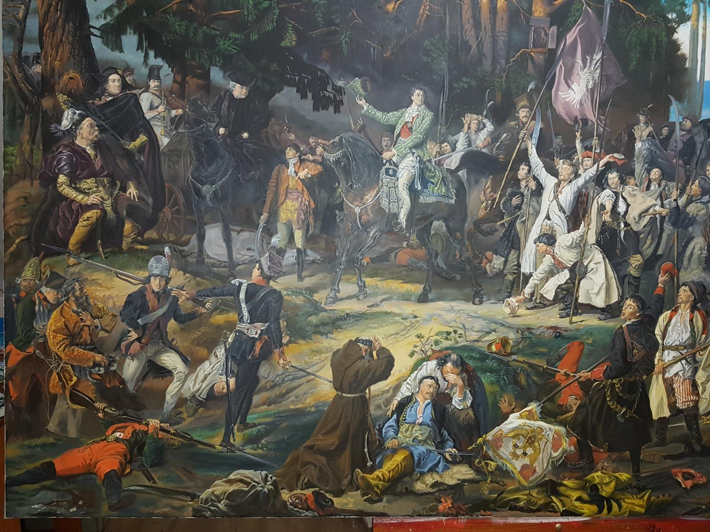

Galeria
Wybrane prace
To nie jest przypadkowa kolekcja. To wybór prac, które najlepiej odnajdują się w nowoczesnych wnętrzach — jako mocny, charakterystyczny akcent.



Wyróżniona praca
Obraz, który buduje atmosferę całego wnętrza
To nie jest detal do uzupełnienia przestrzeni. To centralny punkt kompozycji, który nadaje wnętrzu rytm, emocję i charakter. Wybrane prace mają działać mocno już od pierwszego spojrzenia.
Zapytaj o obrazDlaczego te obrazy
Prace tworzone z myślą o realnej obecności w przestrzeni
Centrum wnętrza
Obraz nie pełni roli dodatku. Ma przyciągać wzrok i porządkować charakter całej przestrzeni.
Autorski charakter
Każda praca powstaje jako osobna wypowiedź malarska, z naciskiem na światło, formę i emocję.
Wyrazista obecność
To obrazy, które mają budować nastrój i zostawać z odbiorcą na dłużej niż pierwsze wrażenie.
Dopasowanie do miejsca
Wybrane prace dobrze odnajdują się zarówno w prywatnych wnętrzach, jak i bardziej reprezentacyjnych przestrzeniach.
O artyście
Malarstwo jako osobisty język wyrazu
Twórczość Grzegorza Kozdroja koncentruje się na obrazie jako centralnym elemencie przestrzeni. Każda praca powstaje z myślą o tym, jak będzie funkcjonować we wnętrzu — jak przyciąga wzrok, buduje nastrój i nadaje charakter.
Poznaj proces, podejście i historię stojącą za każdą pracą.
Poznaj artystęKażdy obraz to osobna opowieść — budowana kolorem, fakturą i emocją.
Proces współpracy
Prosta droga od pierwszego kontaktu do wybranej pracy
Kontakt
Pierwsza rozmowa pozwala określić potrzeby, typ przestrzeni i kierunek, który najlepiej odpowiada oczekiwaniom.
Dobór pracy
Na tym etapie wybierana jest konkretna praca lub ustalany jest zakres indywidualnego zamówienia.
Realizacja
Ostatni krok to finalizacja ustaleń, przygotowanie obrazu i przejście do przekazania lub dalszej współpracy.
Kontakt
Zainteresowany pracami lub współpracą?
Skontaktuj się, aby zapytać o dostępność obrazów, indywidualne zamówienia lub możliwość współpracy.